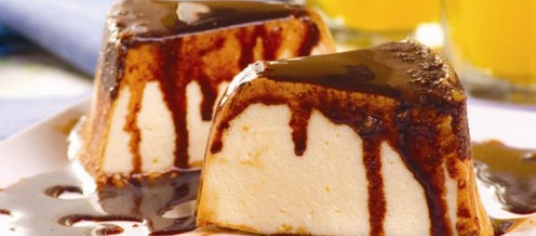
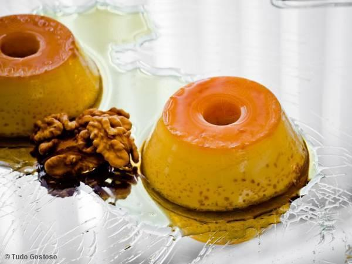
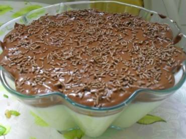

Doces
- 
Imagem do sorvetão.
- Sovertão
- Delicioso sorvete caseiro com calda de chocolate. Rápido, prático e gostoso!
- Autor: Maria Ribeiro
- Avaliação: 5
- 56 pessoas avaliaram essa receita
Imagem do bombom de travessa.- Bombom
- Bombom caseiro de creme com chocolate e morango! Muito fácil de fazer!
- Autor: Silvana Rodrigues
- Avaliação: 4
- 96 pessoas avaliaram essa receita
- 
Imagem do pudim.
- Pudim
- Delicioso pudim de leite condensado com uma maravilhosa calda.
- Autor: Eduardo Oliveira
- Avaliação: 4
- 106 pessoas avaliaram essa receita
- Imagem do prestigio caseiro.
- Prestígio
- Doce de prestigio caseiro, delicioso e rápido!
- Autor: Ana Benati
- Avaliação: 5
- 72 pessoas avaliaram essa receita